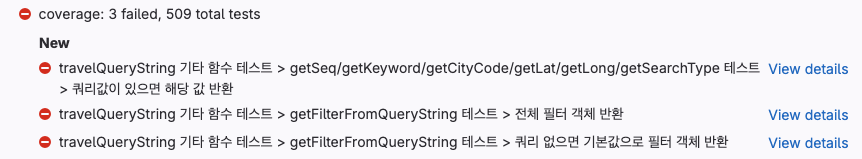
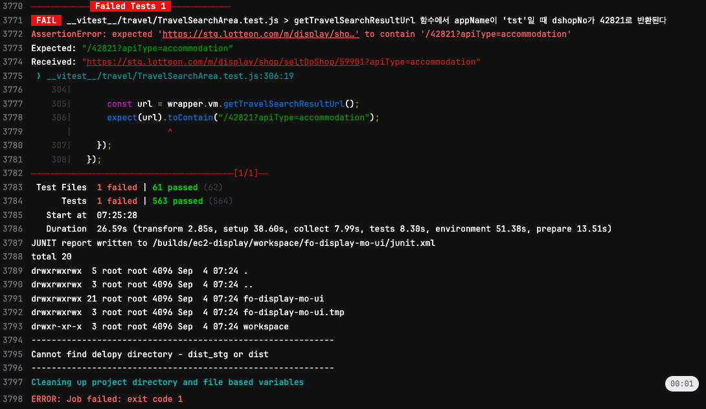
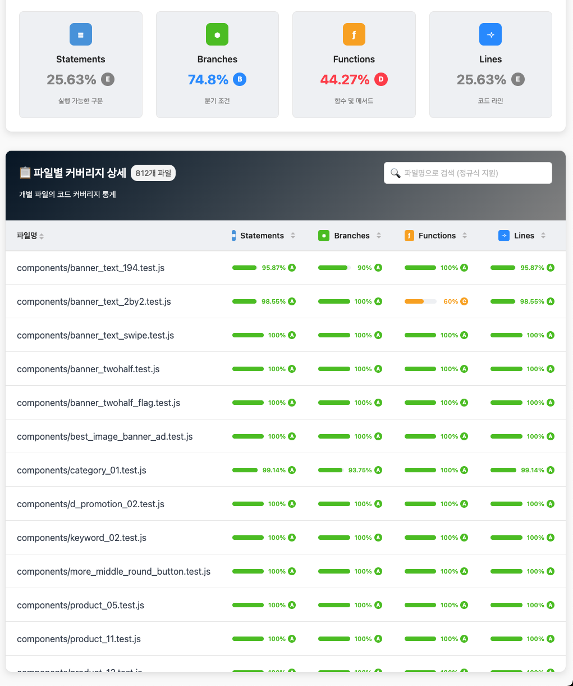
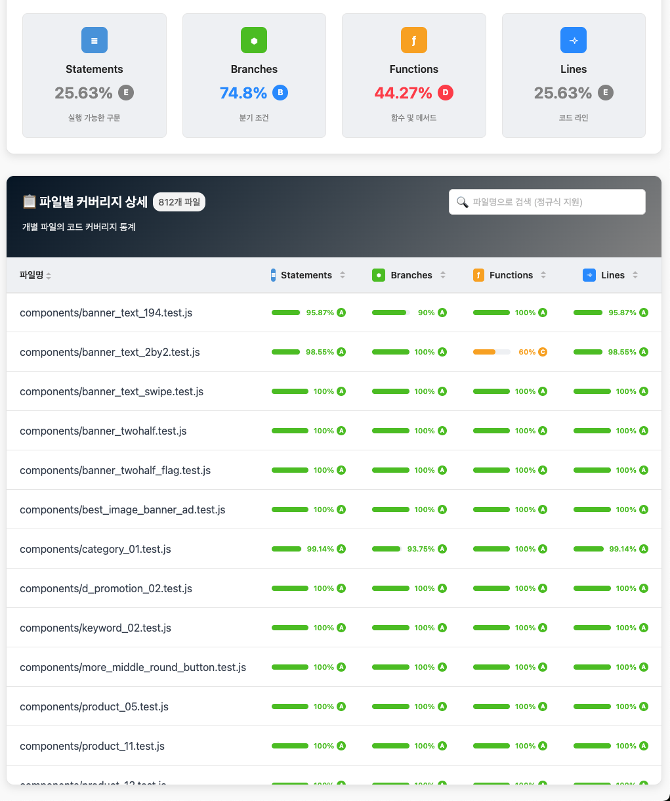

Vitest와 함께,
더 빠르고 안정적인
프론트엔드 개발하기
Vue 컴포넌트 단위 테스트 도입 사례 및 성과 공유
발표자: 서지훈 | 소속: 파인딩개발팀
왜 테스트 자동화가 필요한가?
😰 Problem
- 🔄 버그 수정 → 새로운 버그 발생의 악순환
- ⏰ 수동 테스트의 시간적 한계
- 😓 반복적인 회귀 테스트의 피로감
- 🤝 협업 시 사이드 이펙트 증가
✨ Solution
- 🛡️ 코드 안정성 확보
- 💪 리팩토링 자신감 향상
- ⚡ 협업 효율 극대화
- 📈 지속 가능한 개발 문화
Today's Agenda
Part 1. 테스트 인프라 구축
빠르고 견고한 테스트 환경은 어떻게 만들었을까?
Part 2. 프로젝트 적용 사례
실제 Vue 컴포넌트는 어떻게 테스트했을까?
Part 3. 모니터링 및 성과
그래서, 무엇이 얼마나 좋아졌을까?
Part 1
테스트 인프라 구축
빠르고 견고한 테스트 환경은 어떻게 만들었을까?
기술 스택: 왜 Vitest를 선택했는가?
⚡
빠른 속도
Vite 기반으로 Jest 대비 10배 이상 빠른 테스트 실행
🎯
쉬운 설정
별도의 트랜스파일 설정 없이 즉시 사용 가능
💎
좋은 DX
직관적인 UI와 HMR 지원으로 개발 경험 향상
주요 기술 스택
Vitest
@vue/test-utils
MSW
Faker.js
MockDataBuilder.js(자체제작)
테스트 환경 설정: vitest.config.js
// vitest.config.js
export default defineConfig({
test: {
setupFiles: path.resolve(__dirname, "__vitest__/vitest.setup.js"),
// 환경 설정
globals: true,
environment: "jsdom",
// 리포팅
silent: process.env.CI === "true",
reporters: process.env.CI === "true" ? ["default", "junit"] : ["default"],
outputFile: { junit: "./junit.xml" },
// 테스트 파일
include: [path.resolve(__dirname, "__vitest__/**/*.test.{js,ts,tsx}")],
// 커버리지
coverage: {
enabled: process.env.COVERAGE === "true",
reporter: ["html", "json-summary", "text", "cobertura"],
include: ["__vitest__/**/*.test.{js,ts,tsx}", "src/**/*.{js,ts,vue,tsx,ts}"],
}
},
resolve: {
alias: [{ find: '@', replacement: path.resolve(__dirname, 'src') }],
},
});
테스트 환경 설정: vitest.setup.js
모든 테스트 실행 전, 동일한 환경을 제공하는 역할
// /__vitest__/vitest.setup.js
import Vue from "vue";
import { vi } from "vitest";
import modulesPlugin from "@/assets/js/modulesPlugin.js";
import productMixinV2 from "@/assets/js/productMixinV2.js";
import { moduleUtil, stringUtil } from "@lotteon/display-utils";
// 1. Vue 기본 설정
Vue.use(modulesPlugin);
Vue.mixin(productMixinV2);
// 2. 외부 의존성 Mocking
global.EventBus = { $emit: vi.fn(), $on: vi.fn(), $off: vi.fn() };
global.$modal = { show: vi.fn(), hide: vi.fn() };
// 3. 이미지 최적화 함수 Mocking
const $imgOptimize = (url, dims) => `${url || ""}${dims || ""}`;
global.$imgOptimize = $imgOptimize;
// 4. 전역 유틸리티 함수 등록
Object.assign(global, { moduleUtil, stringUtil });
테스트 데이터 생성: MockDataBuilder.js
복잡한 API 응답 데이터를 쉽게 만들기 위해 빌더 패턴 도입
As-Is: 수동 작성 (약 5분 소요)
const mockData = {
moduleInfo: { moduleType: 'product_05', ... },
productListData: {
product: [
{ prdNo: 'P001', prdNm: '상품1', ... },
{ prdNo: 'P002', prdNm: '상품2', ... }
]
}
};
To-Be: 빌더 사용 (약 1분 소요)
// 직관적인 데이터 생성
const mockData = new MockDataBuilder().addModule("product_05").withProducts(2).build();
✨ 효과: 테스트 데이터 준비 시간 80% 단축
API Mocking: MSW로 환경 통일하기
Mock Service Worker를 사용해 브라우저와 Node.js(테스트 환경)에서 동일한 Mock 데이터를 사용합니다.
// src/mocks/handlers/product_05.handler.js - 재사용 가능한 핸들러 팩토리
import { http, HttpResponse } from "msw";
import MockDataBuilder from "@mock/builder/MockDataBuilder.js";
export const createProduct05Handlers = () => ({
// 기본 핸들러 (상품 2개)
default: http.get("/api/display/product_05", () => {
const data = new MockDataBuilder().addModule("product_05").withProducts(2).build();
return HttpResponse.json({ returnCode: "200", data });
}),
// 에러 응답 핸들러
error: http.get("/api/display/product_05", () => HttpResponse.json(null, { status: 500 })),
});
Part 2
프로젝트 적용 사례
실제 Vue 컴포넌트는 어떻게 테스트했을까?
테스트 시나리오 소개
대상 컴포넌트: product_05.vue
주요 테스트 시나리오
기본 렌더링
MockDataBuilder로 생성한 데이터를 Props로 주입했을 때, 상품 개수에 따라 모듈이 정상적으로 노출/비노출 되는가?
API 연동 (MSW)
MSW로 실제 API 응답을 모킹했을 때, 응답 데이터에 따라 모듈이 정상적으로 렌더링 되는가?
Edge Case
API 응답이 실패하거나, 상품 개수가 부족할 때 적절히 처리되는가?
테스트 케이스 1: 기본 렌더링
Props 데이터를 직접 주입하여 테스트
describe("product_05 컴포넌트", () => {
// 시나리오: 상품이 2개 미만이면 모듈이 노출되지 않아야 함
it("productListData.product가 2개 미만이면 노출 안 됨", () => {
// Arrange: 상품 1개 데이터 생성
const data = new MockDataBuilder()
.addModule("product_05")
.withProducts(1)
.build();
// Act: 컴포넌트 마운트
const wrapper = mount(Product05, { propsData: { data } });
// Assert: isView는 false이고, module-wrapper가 없음
expect(wrapper.vm.isView).toBe(false);
expect(wrapper.html()).not.toContain("module-wrapper");
});
});
테스트 케이스 2: API 연동 (MSW)
실제 API 호출을 시뮬레이션하여 테스트
describe("product_05 컴포넌트 (API 연동)", () => {
// 시나리오: API로부터 상품 2개를 받아와서 모듈이 노출되어야 함
it("API로부터 상품 2개를 받아와서 모듈이 노출되어야 함", async () => {
// Arrange: MSW로 API 응답 모킹 (상품 2개 반환)
server.use(createProduct05Handlers().default);
// Act: API 호출 및 컴포넌트 마운트
const response = await fetch("/api/display/product_05");
const result = await response.json();
const wrapper = mount(Product05, { propsData: { data: result.data } });
// Assert: isView는 true이고, 상품 2개가 렌더링됨
expect(wrapper.vm.isView).toBe(true);
expect(wrapper.vm.productListData.product.length).toBe(2);
});
});
테스트 케이스 3: Edge Case
API 응답이 비정상일 경우를 테스트
describe("product_05 컴포넌트 (Edge Case)", () => {
// 시나리오: API로부터 상품을 1개만 받으면 모듈이 노출되지 않아야 함
it("API로부터 상품 1개만 받으면 모듈이 노출되지 않아야 함", async () => {
// Arrange: MSW로 상품 1개만 반환하도록 모킹
server.use(createProduct05Handlers().custom(1));
// Act: API 호출 및 컴포넌트 마운트
const response = await fetch("/api/display/product_05");
const result = await response.json();
const wrapper = mount(Product05, { propsData: { data: result.data } });
// Assert: isView는 false이고, module-wrapper가 없음
expect(wrapper.vm.isView).toBe(false);
expect(wrapper.html()).not.toContain("module-wrapper");
});
});
테스트 실행 및 결과 확인: vitest --ui
🎨 Vitest UI의 주요 기능
- 실시간 테스트 실행: 파일 저장 시 자동으로 관련 테스트 재실행
- 시각적 결과 확인: 통과/실패를 직관적인 UI로 확인
- 상세한 디버깅 정보: 각 테스트의 로그, 에러 스택 트레이스 제공
- 필터링 & 검색: 특정 테스트만 선택적으로 실행 가능
💡 Demo: 코드를 수정하자마자 테스트 결과가 UI에 실시간으로 반영되는 모습
Part 3
모니터링 및 성과
그래서, 무엇이 얼마나 좋아졌을까?
단위 테스트 개발 워크플로우
📝
1. 기획 & 테스트 작성
기능 명세 기반으로 테스트 시나리오를 구상하고, 테스트 코드를 먼저 작성합니다.
💻
2. 로컬 개발
커밋 시점에 변경된 파일의 테스트를 자동으로 실행하여 즉각적인 피드백을 받습니다.
🚀
3. 코드 리뷰 (MR)
MR 생성 시 전체 테스트와 커버리지를 측정하여 코드 통합 품질을 보증합니다. (GitLab CI)

🚢
4. 배포
모든 테스트를 통과한 코드만 배포하여 서비스의 최종 안정성을 확보합니다. (CI/CD)

CI/CD 연동 및 자동화
// .gitlab-ci.yml
coverage:
stage: test
variables:
CI: "true"
COVERAGE: "true"
script:
- npx vitest run
artifacts:
reports:
junit: junit.xml
coverage_report:
coverage_format: cobertura
path: coverage/cobertura-coverage.xml
자동화 파이프라인
MR(Merge Request) 생성 시 GitLab CI 파이프라인 실행
`vitest run` 명령어로 단위 테스트 및 커버리지 측정 자동 수행
테스트 결과(JUnit)와 커버리지(Cobertura)를 GitLab에 리포팅
배포 시 `coverage-summary.json` 파일을 S3에 업로드하여 Bigbro 대시보드 자동 갱신
도입 성과 및 향후 과제
📈 정량적 성과
-26%
결함 밀도 감소
(작업량 대비 결함 비율)
✨ 정성적 성과
- 리팩토링에 대한 자신감 향상으로 레거시 코드 개선 가속화
- Merge Request 리뷰 시 테스트 코드로 의도 파악 용이
- 새로운 팀원의 온보딩 시간 단축
-
시각적 성과(뱃지, 대시보드) 확인을 통한 개발 만족도 및 동기 부여
🎯 향후 과제
- 단위 테스트에서 통합(Integration), E2E 테스트로 점차 확대
- 테스트 커버리지 70% 목표 달성
- 테스트 작성 문화를 전사 확산
Q&A
"테스트는 비용이 아닌,
품질을 위한 투자입니다."
🙏 경청해 주셔서 감사합니다


 
